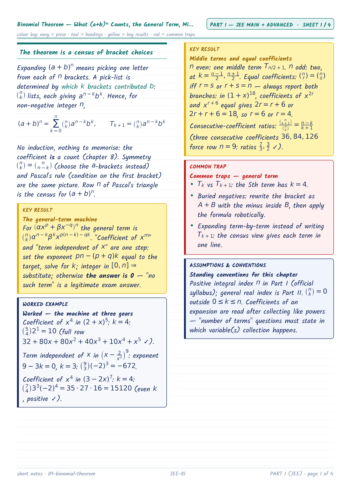
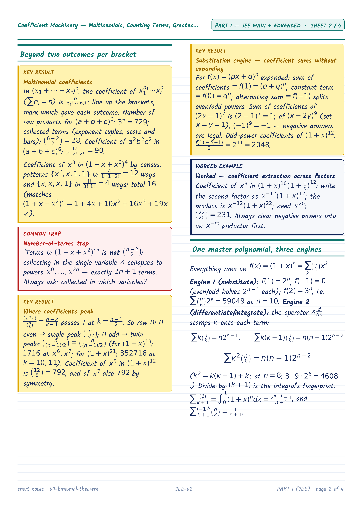
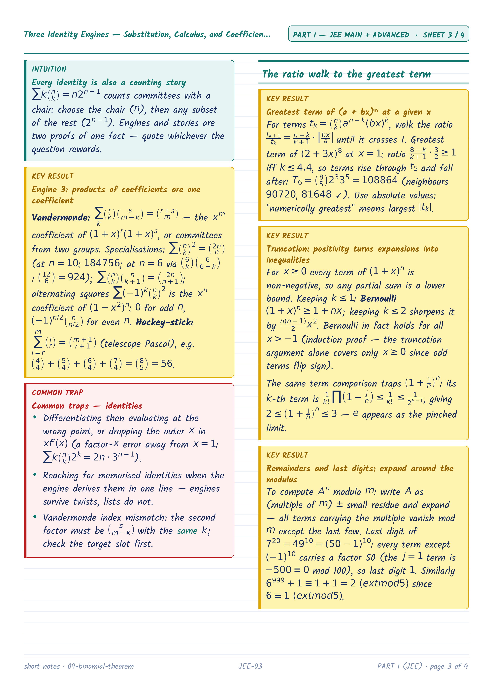
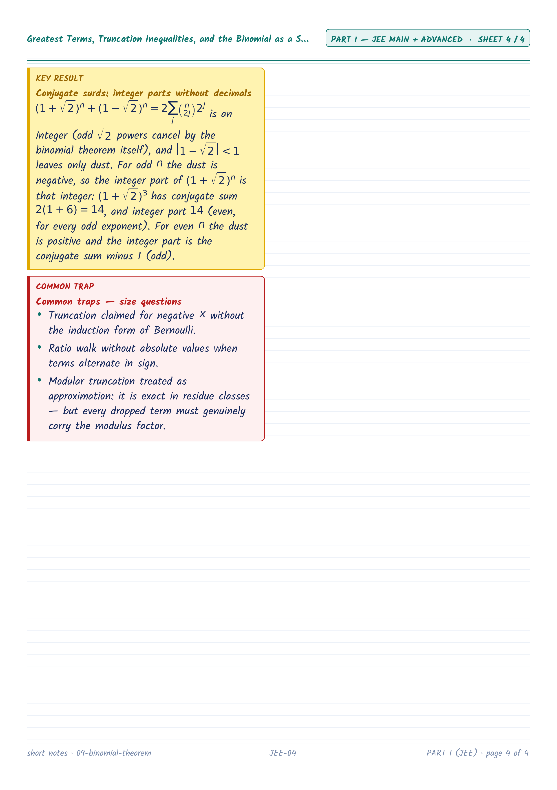
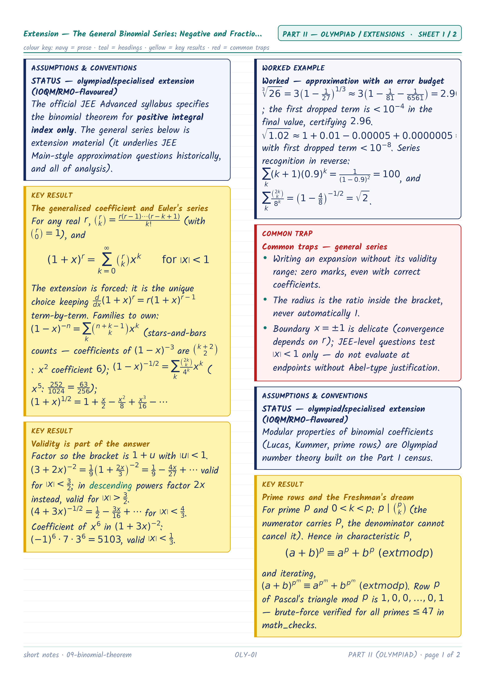
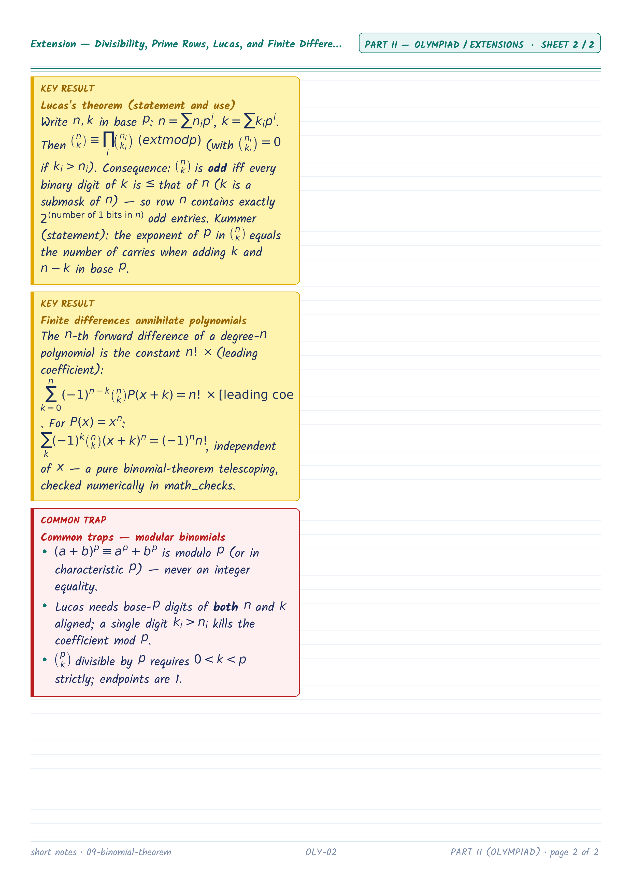

Downloads
Combined PNG ZIP (JEE first)
JEE PNG ZIP
Olympiad PNG ZIP
Combined PDF (bookmarked)
JEE PDF (bookmarked)
Olympiad PDF (bookmarked)
Printing: A4 portrait, one sheet per page, Fit (not Fill/Crop). Every PNG is already exact A4 proportion at 300 DPI (2480×3508).
Part I — JEE Main + Advanced (4 sheets)


JEE-01 — Binomial Theorem — What (a+b)ⁿ Counts, the General Term, Middle Terms
Binomial Theorem — What (a+b)ⁿ Counts, the General Term, Middle Terms
Binomial Theorem — What (a+b)ⁿ Counts, the General Term, Middle Terms


JEE-02 — Coefficient Machinery — Multinomials, Counting Terms, Greatest Coefficients
Coefficient Machinery — Multinomials, Counting Terms, Greatest Coefficients
Coefficient Machinery — Multinomials, Counting Terms, Greatest Coefficients


JEE-03 — Three Identity Engines — Substitution, Calculus, and Coefficient Extraction (cont.)
Three Identity Engines — Substitution, Calculus, and Coefficient Extraction
Three Identity Engines — Substitution, Calculus, and Coefficient Extraction


JEE-04 — Greatest Terms, Truncation Inequalities, and the Binomial as a Sieve (cont.)
Greatest Terms, Truncation Inequalities, and the Binomial as a Sieve
Greatest Terms, Truncation Inequalities, and the Binomial as a Sieve
Part II — Olympiad / Extensions (2 sheets)


OLY-01 — Extension — The General Binomial Series: Negative and Fractional Indices, Validity, Approximation
Extension — The General Binomial Series: Negative and Fractional Indices, Validity, Approximation
Extension — The General Binomial Series: Negative and Fractional Indices, Validity, Approximation


OLY-02 — Extension — Divisibility, Prime Rows, Lucas, and Finite Differences (cont.)
Extension — Divisibility, Prime Rows, Lucas, and Finite Differences
Extension — Divisibility, Prime Rows, Lucas, and Finite Differences